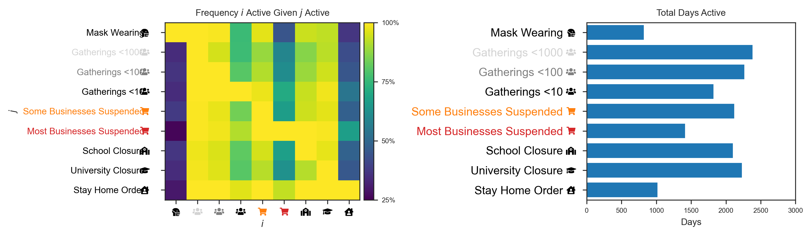

Preprocessing Examples¶
Examine the example dataset format and preprocess example data. Explore properties of the PreprocessedData object and masking operations available.
[93]:
from epimodel.preprocessing.data_preprocessor import preprocess_data
import numpy as np
import pandas as pd
Example Dataset¶
Data format:
[79]:
pd.read_csv('../notebooks/double-entry-data/data_final_nov.csv').head()
[79]:
| Country Code | Date | Region Name | Confirmed | Active | Deaths | Mask Wearing | Symptomatic Testing | Gatherings <1000 | Gatherings <100 | ... | Some Businesses Suspended | Most Businesses Suspended | School Closure | University Closure | Stay Home Order | Travel Screen/Quarantine | Travel Bans | Public Transport Limited | Internal Movement Limited | Public Information Campaigns | |
|---|---|---|---|---|---|---|---|---|---|---|---|---|---|---|---|---|---|---|---|---|---|
| 0 | AL | 2020-01-22 00:00:00+00:00 | Albania | 0.0 | 0.0 | 0.0 | 0.0 | 0.0 | 0.0 | 0.0 | ... | 0.0 | 0.0 | 0.0 | 0.0 | 0.0 | 0.0 | 0.0 | 0.0 | 0.0 | 0.0 |
| 1 | AL | 2020-01-23 00:00:00+00:00 | Albania | 0.0 | 0.0 | 0.0 | 0.0 | 0.0 | 0.0 | 0.0 | ... | 0.0 | 0.0 | 0.0 | 0.0 | 0.0 | 0.0 | 0.0 | 0.0 | 0.0 | 0.0 |
| 2 | AL | 2020-01-24 00:00:00+00:00 | Albania | 0.0 | 0.0 | 0.0 | 0.0 | 0.0 | 0.0 | 0.0 | ... | 0.0 | 0.0 | 0.0 | 0.0 | 0.0 | 0.0 | 0.0 | 0.0 | 0.0 | 0.0 |
| 3 | AL | 2020-01-25 00:00:00+00:00 | Albania | 0.0 | 0.0 | 0.0 | 0.0 | 0.0 | 0.0 | 0.0 | ... | 0.0 | 0.0 | 0.0 | 0.0 | 0.0 | 0.0 | 0.0 | 0.0 | 0.0 | 0.0 |
| 4 | AL | 2020-01-26 00:00:00+00:00 | Albania | 0.0 | 0.0 | 0.0 | 0.0 | 0.0 | 0.0 | 0.0 | ... | 0.0 | 0.0 | 0.0 | 0.0 | 0.0 | 0.0 | 0.0 | 0.0 | 0.0 | 0.0 |
5 rows × 21 columns
Loading example data:
[80]:
data = preprocess_data('../notebooks/double-entry-data/data_final_nov.csv')
Dropping NPI Travel Screen/Quarantine
Dropping NPI Travel Bans
Dropping NPI Public Transport Limited
Dropping NPI Internal Movement Limited
Dropping NPI Public Information Campaigns
Dropping NPI Symptomatic Testing
Masking invalid values
Exploring Preprocessed Data¶
NPI names:
[81]:
data.CMs
[81]:
['Mask Wearing',
'Gatherings <1000',
'Gatherings <100',
'Gatherings <10',
'Some Businesses Suspended',
'Most Businesses Suspended',
'School Closure',
'University Closure',
'Stay Home Order']
Region codes and names:
[82]:
data.RNames.groupby(level=0).first()
[82]:
Country Code
AD Andorra
AL Albania
AT Austria
BA Bosnia and Herzegovina
BE Belgium
BG Bulgaria
CH Switzerland
CZ Czech Republic
DE Germany
DK Denmark
EE Estonia
ES Spain
FI Finland
FR France
GB United Kingdom
GE Georgia
GR Greece
HR Croatia
HU Hungary
IE Ireland
IL Israel
IS Iceland
IT Italy
LT Lithuania
LV Latvia
MA Morocco
MT Malta
MX Mexico
MY Malaysia
NL Netherlands
NO Norway
NZ New Zealand
PL Poland
PT Portugal
RO Romania
RS Serbia
SE Sweden
SG Singapore
SI Slovenia
SK Slovakia
ZA South Africa
Name: Region Name, dtype: object
All preprocessed data parameters
[111]:
data_details = {'Dates': data.Ds,
'Region Abbreviations':data.Rs,
'Region Names':data.RNames,
'NPI names':data.CMs,
'Active cases': data.Active,
'Confirmed cases': data.Confirmed,
'Deaths':data.Deaths,
'New Deaths':data.NewDeaths,
'New Cases':data.NewCases,
'Active NPIs':data.ActiveCMs}
for k,v in data_details.items():
try:
dtype = v.dtype
except AttributeError:
dtype = type(v[0])
print(f'{k} | Type:{type(v)} ({dtype}), Shape:{np.array(v).shape}')
Dates | Type:<class 'list'> (<class 'pandas._libs.tslibs.timestamps.Timestamp'>), Shape:(130,)
Region Abbreviations | Type:<class 'list'> (<class 'str'>), Shape:(30,)
Region Names | Type:<class 'pandas.core.series.Series'> (object), Shape:(5330,)
NPI names | Type:<class 'list'> (<class 'str'>), Shape:(9,)
Active cases | Type:<class 'numpy.ma.core.MaskedArray'> (float64), Shape:(30, 130)
Confirmed cases | Type:<class 'numpy.ma.core.MaskedArray'> (float64), Shape:(30, 130)
Deaths | Type:<class 'numpy.ma.core.MaskedArray'> (float64), Shape:(30, 130)
New Deaths | Type:<class 'numpy.ma.core.MaskedArray'> (float64), Shape:(30, 130)
New Cases | Type:<class 'numpy.ma.core.MaskedArray'> (float64), Shape:(30, 130)
Active NPIs | Type:<class 'numpy.ndarray'> (float64), Shape:(30, 9, 130)
Plotting Preprocesed Data¶
[84]:
cm_plot_style = [
("\uf963", "black"), # mask
("\uf0c0", "lightgrey"), # ppl
("\uf0c0", "grey"), # ppl
("\uf0c0", "black"), # ppl
("\uf07a", "tab:orange"), # shop 1
("\uf07a", "tab:red"), # shop2
("\uf549", "black"), # school
("\uf19d", "black"), # university
("\uf965", "black"), # home
("\uf072", "grey"), # plane1
("\uf072", "black"), # plane2
("\uf238", "black"), # train
("\uf1b9", "black"), # car
("\uf641", "black") # flyer
]
data.summary_plot(cm_plot_style)
'Font Awesome 5 Free-Solid-900.otf' can not be subsetted into a Type 3 font. The entire font will be embedded in the output.

Preprocessed Data Operations¶
Remove regions with fewer than 100 total deaths:
[83]:
data.remove_regions_min_deaths(100)
Region AL removed since it has 33.0 deaths on the last day
Region AD removed since it has 51.0 deaths on the last day
Region EE removed since it has 67.0 deaths on the last day
Region GE removed since it has 12.0 deaths on the last day
Region IS removed since it has 10.0 deaths on the last day
Region LV removed since it has 24.0 deaths on the last day
Region LT removed since it has 70.0 deaths on the last day
Region MT removed since it has -- deaths on the last day
Region NZ removed since it has 22.0 deaths on the last day
Region SG removed since it has 23.0 deaths on the last day
Region SK removed since it has 28.0 deaths on the last day
Remove region ‘AL’:
[112]:
data.remove_regions_from_codes('AL')
Mask dates for which NPIs were deactivated
[113]:
data.mask_reopenings()
Masking AT from 2020-05-04 00:00:00+00:00
Masking AT from 2020-05-21 00:00:00+00:00
Masking BE from 2020-05-14 00:00:00+00:00
Masking BA from 2020-05-17 00:00:00+00:00
Masking BG from 2020-05-04 00:00:00+00:00
Masking BG from 2020-05-21 00:00:00+00:00
Masking HR from 2020-04-30 00:00:00+00:00
Masking HR from 2020-05-14 00:00:00+00:00
Masking HR from 2020-05-29 00:00:00+00:00
Masking CZ from 2020-04-27 00:00:00+00:00
Masking CZ from 2020-05-14 00:00:00+00:00
Masking CZ from 2020-05-28 00:00:00+00:00
Masking DK from 2020-04-23 00:00:00+00:00
Masking DK from 2020-05-14 00:00:00+00:00
Masking FI from 2020-05-17 00:00:00+00:00
Masking FR from 2020-05-14 00:00:00+00:00
Masking DE from 2020-04-23 00:00:00+00:00
Masking DE from 2020-05-07 00:00:00+00:00
Masking DE from 2020-05-09 00:00:00+00:00
Masking GR from 2020-05-07 00:00:00+00:00
Masking GR from 2020-05-14 00:00:00+00:00
Masking HU from 2020-05-07 00:00:00+00:00
Masking HU from 2020-05-21 00:00:00+00:00
Masking IL from 2020-04-29 00:00:00+00:00
Masking IL from 2020-05-07 00:00:00+00:00
Masking IL from 2020-05-08 00:00:00+00:00
Masking IL from 2020-05-22 00:00:00+00:00
Masking IT from 2020-05-21 00:00:00+00:00
Masking MY from 2020-05-07 00:00:00+00:00
Masking MY from 2020-05-13 00:00:00+00:00
Masking NL from 2020-05-14 00:00:00+00:00
Masking NO from 2020-04-30 00:00:00+00:00
Masking NO from 2020-05-10 00:00:00+00:00
Masking NO from 2020-05-14 00:00:00+00:00
Masking PL from 2020-04-23 00:00:00+00:00
Masking PL from 2020-05-07 00:00:00+00:00
Masking PT from 2020-05-07 00:00:00+00:00
Masking RO from 2020-05-18 00:00:00+00:00
Masking RS from 2020-04-30 00:00:00+00:00
Masking RS from 2020-05-09 00:00:00+00:00
Masking RS from 2020-05-10 00:00:00+00:00
Masking SI from 2020-04-23 00:00:00+00:00
Masking SI from 2020-05-03 00:00:00+00:00
Masking SI from 2020-05-21 00:00:00+00:00
Masking ES from 2020-05-14 00:00:00+00:00
Masking ES from 2020-05-28 00:00:00+00:00
Masking CH from 2020-04-30 00:00:00+00:00
Masking CH from 2020-05-14 00:00:00+00:00
Masking GB from 2020-05-16 00:00:00+00:00
Mask the final 20 days for all regions:
[114]:
data.mask_region_ends(20)
Mask all but the first 14 days for region ‘AT’
[115]:
data.mask_region('AT',days=14)
[115]:
(61, 75)
Unmask data
[116]:
data.unmask_all()
[ ]: